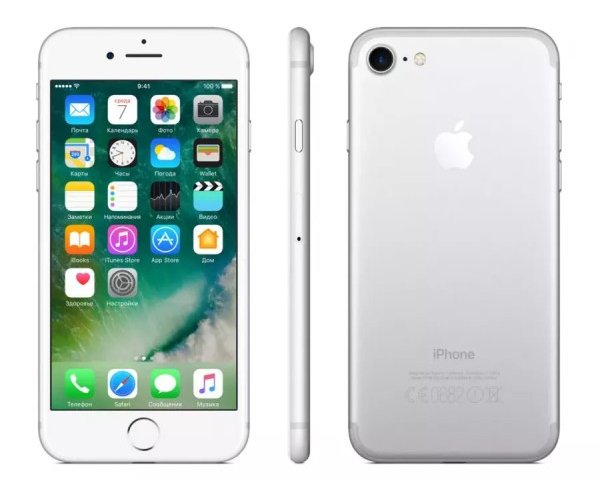

iPhone 7 и iPhone 7 Plus — смартфоны корпорации Apple, использующие процессор Apple A10 Fusion, процессор содержит 3,3 миллиарда транзисторов на площади в 125 кв. мм и операционную систему iOS 10 (первоначально, поддерживает обновление до iOS 15), представленные 7 сентября 2016 года[2][6]. Диагональ экрана и разрешение была оставлена такой же по сравнению с предыдущими моделями: iPhone 6s и iPhone 6s Plus. Толщина телефона — 7,1—7,3 мм, без учета модуля камеры, выступающей за пределы (двух камер в iPhone 7 Plus). Смартфоны используют только порт Lightning, лишившись традиционного разъёма TRRS mini-jack (3,5 мм) для подключения проводных наушников. Также телефоны получили защиту от воды и пыли на уровне IP67.
Прием iPhone 7 был неоднозначным. Хотя рецензенты отметили улучшения в камере, особенно в двойной задней камере модели Plus, телефон подвергся критике за отсутствие инноваций в качестве сборки. Во многих обзорах обсуждалось удаление 3,5-мм разъёма для наушников; некоторые критики утверждали, что это изменение было направлено на расширение лицензирования фирменного разъёма Lightning и продаж собственных беспроводных наушников Apple, и ставили под сомнение влияние изменений на качество звука.